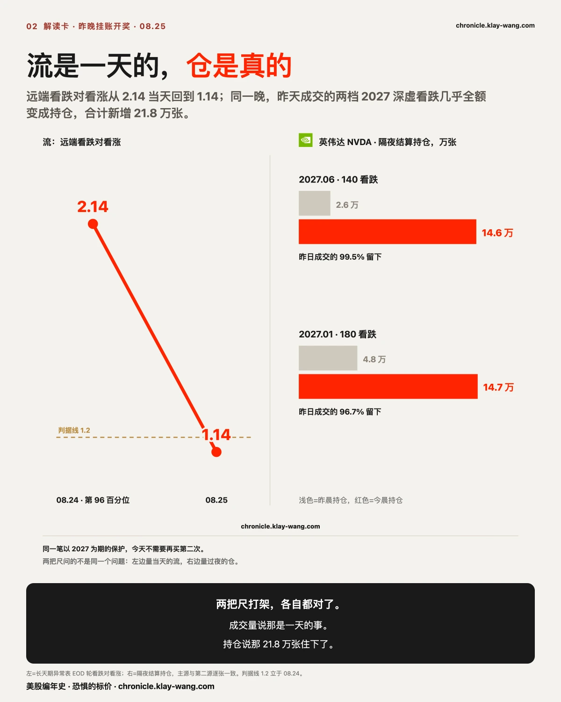
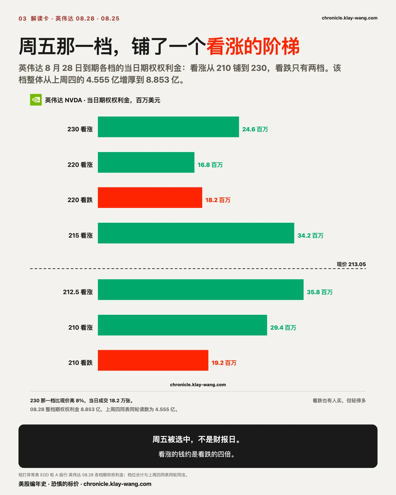
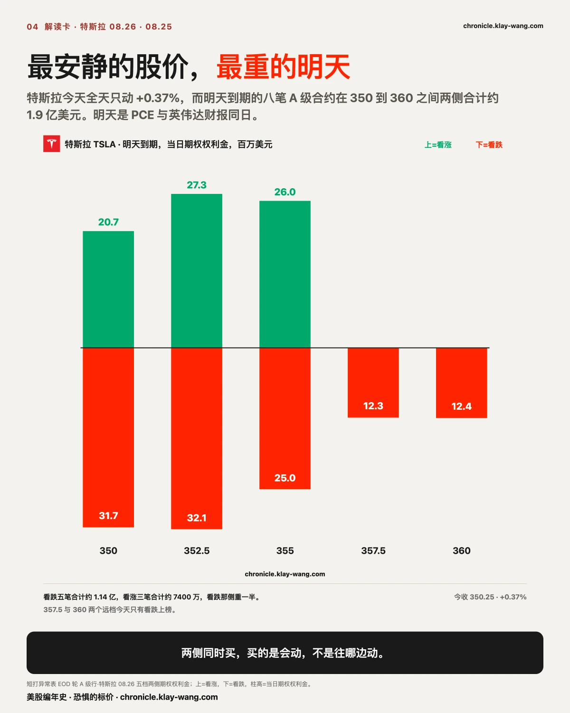
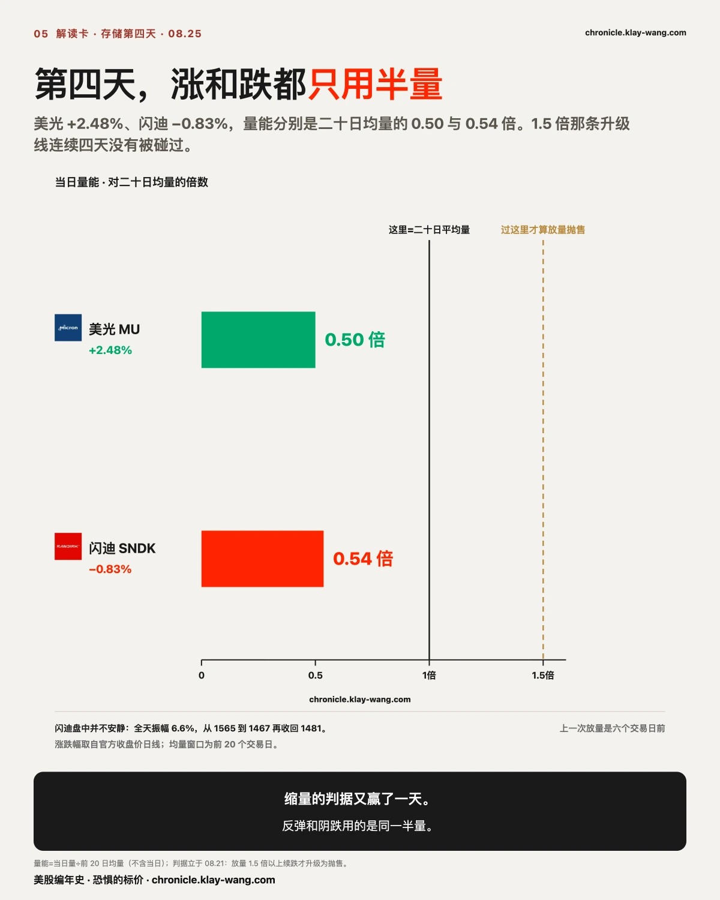
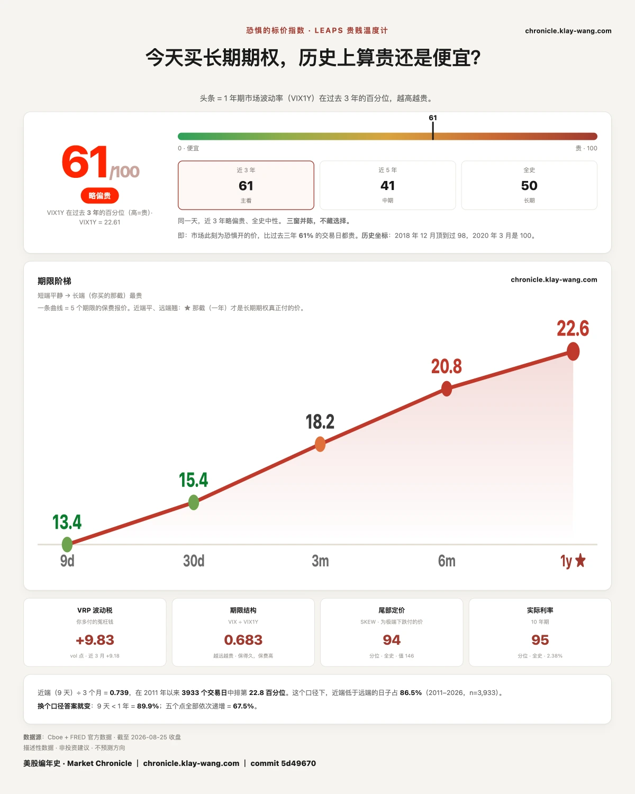

十五亿的期权权利金进场，英伟达居然只分到两成？ · 8.24-8.28
这一期讲什么
昨天这封信的标题是，所有人都在等这个星期五，而今天的新钱一笔都没押它。
先更正那句话里的一个数（2026.08.25 记）。昨天写的是异常等级最高的八笔全部到期在 9 月 4 日、没有一笔押本周五。复核后那把尺用错了列：它数的是波动分档最高那一档票的前八笔，不是全场异常等级最高的行。按对的尺子，昨天 A 级异常一共二十笔，其中押本周五的有三笔，全部是英伟达的看涨。等待是真的，大头也确实在下周，但它没有昨天写的那么彻底。
更正完，今天的事反而更清楚了。财报前最后一个完整交易日，等待结束了：A 级异常从二十笔变成四十八笔，其中十八笔押明天，二十笔押本周五，只有九笔还留在 9 月 4 日。押本周五的，从三笔变成二十笔，从一只票变成一片票。整个短端的当日期权权利金加起来约十五亿美元，其中英伟达只占 20.7%，而昨天这个数字是 78.3%。
涨跌榜今天写着英伟达 +2.19%，七连跌在第八天停了。这个数是真的，但它是结果。期权的权利金里埋着的那一条是：在财报前二十四小时，付钱的等待集体结束了。

流是一天的，仓是真的：21.8 万张昨晚住下了
昨天正文末尾挂了几道题，说好今晨对账。先把开出来的摆上桌。
那两档十万张的深虚看跌，几乎一张不少地留下了。 2027 年 6 月的 140 看跌，昨天成交 12.04 万张，今晨结算后的持仓从 2.57 万张变成 14.56 万张，新增量等于昨日成交的 99.5%。2027 年 1 月的 180 看跌，持仓从 4.81 万张变成 14.66 万张，等于昨日成交的 96.5%。两档合计新增 21.8 万张持仓。这不是当日来回，是有人把钱留在了桌上。昨天承诺补的第二源也到了：两档成交量与主源分别只差 0.013% 和 0.2%，数是真的。
而同一天，远端的比值当场归位。 一百天以上那层的看跌对看涨，昨天是 2.14，二十七个交易日第 96 百分位；今天是 1.14，第一天就掉回了 1.2 以下。按昨天写死的判据，这意味着那个 96 百分位是月度期权到期后第一个交易日的一次性布置，不是持续行为。
把这两条并排放，昨天那句你不必二选一，今天有了答案。成交量那把尺说，那是一天的事；持仓那把尺说，那笔钱住下了。 流是一天的，仓是真的。一笔在财报前一天进场、以 2027 年为期的保护，今天不需要再买第二次。

剩下两道题的答案没那么干净，照实写。英伟达本周五 210 看涨那 2630 万美元的成交，今晨持仓从 9479 张变成 2.78 万张，新增量等于昨日成交的 35%：三分之一留下，三分之二当日来回，落在中间。亚马逊 8 月 31 日的 220 深实值看涨更古怪，620 张成交留下 135 张，既不是正股替代仓该有的量级，也不是干净的当日来回。昨天说它没有干净的解释，今天可以确定的是，它依然没有。
新钱选的不是财报日，是财报之后那一天
新钱回来得很有层次。
本周五那一档，英伟达被铺了一个看涨的阶梯。 212.5 看涨成交 5.66 万张，期权权利金 3580 万美元；215 看涨 3420 万；210 看涨 2940 万；230 看涨 1.82 万张成交乘出 2460 万，那个位置比今天收盘高 8%。同一档的看跌也有人买，210 看跌 1920 万、220 看跌 1820 万，但看涨那一侧的期权权利金明显更重。本周五是财报后的第三个交易日，也是沃什作为美联储主席第一次讲话的那一天。8 月 28 日整档的期权权利金，从上周四的 4.555 亿美元增厚到今天的 8.853 亿，接近翻倍。上周四挂的那道题（这 4.555 亿是排队还是真押注）要等财报之后开奖，今天先把中间点记下：它没有散，它在变厚。
明天那一档，最重的钱押在特斯拉身上。 八笔 A 级合约全部到期在明天，行权价铺在 350 到 360 之间，看跌五笔合计约 1.14 亿美元，看涨三笔合计约 7400 万，两侧一起买，主力三档的成交量是原有持仓的 43 到 59 倍。明天是 PCE 和英伟达财报落在同一天。特斯拉今天现货只动了 +0.37%，是大票里最安静的一只，而它的期权把明天定成了大日子。两侧一起买，买的是那一天会动；看跌那侧重一半，谨慎多过兴奋。


周五那 8.853 亿，买的不是沃什会说什么
值得停一下的是：本周五压着的钱几乎翻倍，而这个市场上没有一个人知道那天会听到什么。
沃什周五第一次以美联储主席的身份在杰克逊霍尔开口。他上任以来一直在推一件事：少给前瞻指引，不再替市场把答案喂到嘴边。七月那次会后发布会就是这套做法的第一次实践，结果是他既没解释为什么按兵不动，也没说清加息还在不在工具箱里，长期美债当场被抛售，三十年期收益率一度冲到 2007 年以来最高。上周财政部又扩大长期国债回购，想把长端摁下去，只管用了不到一天。
所以本周五这笔钱买的不是他说什么，是他说完之后价格会动多少。这两件事的差别，正好写在合约的形状上：8 月 28 日整档从上周四的 4.555 亿增厚到今天的 8.853 亿，而英伟达那个阶梯是看涨看跌两侧都在买，看涨约为看跌的四倍，不是清一色押一个方向。押方向的人会集中在一侧，押波动的人两侧都要。今天的形状更像后者。
还有更能说明问题的一层。短端为这一周三件事付掉约十五亿的同一天，一年期那一层一动没动，连英伟达自己都只动了 0.13 个点。市场对这次讲话的定价是：值一天的波动，不值一年的重新定价。换句话说，它在给沃什的反应函数标价，不是给他的讲稿标价。
这个判断可以被推翻，条件写清楚：如果周五讲完，一年期那一层跟着跳起来，那说明市场原本低估了这场讲话的性质，今天这句话就是错的；如果一年期照旧不动，而周五当天现货晃得很大，那么今天的定价是对的。周五收盘就能对，不用等下周。
谷歌那两条腿是一次决定，不是一群人的巧合
谷歌 2027 年 3 月 19 日到期的两条腿今天同时成交 5500 张：480 看涨用三笔打完，270 看跌用两笔打完。两个位置分别比今天收盘高 38% 和低 22%，原有持仓只有 563 张和 2751 张，几乎是从零摆起来的。
两腿张数完全相等，笔数只有五笔，这是一次决定，不是一群人的巧合。上周五我们验过一组八月中旬的指数看跌，四条腿的持仓同涨同留，证明比值里看起来吓人的东西可以是有边界的价差。今天这个结构同理：一条看涨一条看跌等量成对，在成交记录里它可以是好几种东西，唯一确定的是，有人为明年 3 月的谷歌一次性划定了上下两个远端。明晨两腿的持仓留不留下，会告诉我们它是不是也住下了。
存储这四天不是抛售，是换手换得越来越少
上周四立的判据今天继续开：缩量续跌是重定价，放量超过 1.5 倍才升级为抛售。今天美光 +2.48%，量能只有二十日均量的 0.50 倍；闪迪收 −0.83%，量能 0.54 倍。两只都只用了一半的量。判据没有被触发，重定价的读法保持第四天。同一天，这两只一年期那一档的报价也松了一格：美光降 0.73、闪迪降 1.05，是十七只里降得最多的两只。缩量的现货配上降价的长端，两把互不相干的尺指向同一件事。
但闪迪盘中不平静：全天振幅 6.6%，从 1565 的高点一路到 1467 的低点再收回 1481。它本周五 1500 的两侧都有大钱，看跌那一腿 3773 万美元期权权利金，集中度 30.0%，bar 覆盖率 86.1%，分母已验，单分母（OI 增量不可得），DTE=3，全天匀着打，不是一笔决断单；1500 看涨与美光明天的 930 看涨，集中度不可测，可信的分母一个都不剩。不可测就是不可测，它不等于没有决断单，也不等于随便看看。

七连跌终结了，但这一次判据只给了半分
英伟达今天 +2.19% 收 213.05。上周挂的判据是两支：第八天用一倍以下的量能收涨，算六天碎步的了结；继续放量下跌并跌破 199.09，算重心下移的第一个确认。今天收涨成立，但量能是 1.06 倍，比一倍高出 0.06。七连跌终结是事实，判据里那个干净的缩量形态没有出现，这一条按贴线记录，不算干净开奖。199.09 那条线全程没有被碰过，今天的最低点在 210.11。
财报前夜还有一笔值得记下：2027 年 1 月的 460 看涨全天成交 1.13 万张，成交与持仓的比值是 0.97。460 比今天收盘高 116%。在财报前最后一天，有人把一档一年半后翻倍位置的看涨打满了一整天。它的持仓明晨见分晓。
今天最响的那条芯片新闻，期权权利金一分钱都没给
上午十点四十八分，一条消息出来：OpenAI 说它和博通一起开发的推理芯片，在单位功耗能处理的工作量和响应速度这两项上跑赢了英伟达的 GB300。按当天的公开报道，测试走的是公开基准系统，被比下去的那款正是该系统里排名最高的产品。财报前夜，这是最适合被转发的一条 AI 芯片新闻。
然后看价格。博通今天高开 0.65%，开盘之后一路往下，白天段跌 1.21%，收在 356.74，全天 −0.56%。被叫板的英伟达同一天涨 2.19%，七连跌就是在这一天停的。
再看有成本的那一侧。今天短端十五亿美元的期权权利金里，博通拿到 1670 万，占 1.1%，在十七只里排第十二；它最重的一笔是 200 万美元，而全场最重的一笔是 3770 万，英伟达一家拿走 3.148 亿。
一条说 A 赢了 B 的新闻，当天 A 跌、B 涨，愿意为 A 付钱的人少到排在第十二位。 涨跌幅是结果，不用花钱；期权权利金是意见，要花钱。这条新闻在花钱的那一侧，一分钱都没留下。
明天可以对：博通的当日期权权利金若跳进前五，今天只是消化得慢；若继续排在十名开外，那么市场对这条新闻的定价已经做完了，结论是它不值钱。
市场怕的是明晚，不是明年
本周的钱一边进场，一年期的怕一边变便宜：读数从 63 回落到 61，而指数没有跌。上周挂过一个机械解释，到期换月会把读数抬高，它要求读数回到 68 以上才成立；今天它反着走，那个解释正式收回，往后水平就当水平读。短端在为三件大事付钱，长端连续第二天拒绝加价。这个数不告诉你明天涨跌，它告诉你，必须给未来一年报价、报错要赔钱的那批人，今天把价报低了一点。
这个反差在个股上更干脆。英伟达明晚就要发财报，今天短端为它付掉的期权权利金是全场第二重，它周五那一档整体接近翻倍；而它一年期那一档的报价今天只动了 0.13 个点，从 40.14 到 40.01。短端在为明晚定价，长端连眉毛都没抬一下。市场怕的是明晚，不是明年。

这对你手里的票意味着什么
不给操作，只做翻译。
手里有英伟达，或者跟着它的财报做事：昨天的钱在等，今天的钱进场了，看涨的阶梯铺在本周五 210 到 230 之间。财报是明天盘后，但今天进场的期权权利金大头压的是周五，中间还隔着一个 PCE 和沃什的第一次讲话。你要跟的那笔钱押的是哪一天，先分清。
手里有特斯拉：它今天是大票里现货最安静的一只，而它的期权在明天那一档两侧堆了约 1.9 亿美元。市场为它明天的波动付了全场最重的价钱，方向没人替你选。
手里有存储：连续第四天，跌与涨都只用半量。上一次放量还是六个交易日之前。1.5 倍那条升级线一天没被碰到，重定价的读法就多活一天。
手里什么都没有，在等：昨天全场只有九月的钱，今天本周的钱回来了，而一年期的怕反而变便宜了。两端不同意的时候，你不必替它们裁决，记住谁付了钱就行。
三句话，值得带走
等待也是一种头寸，它的结束比它的存在更有信息量。押本周五的从三笔变成二十笔，转身发生在财报前二十四小时。数错了的地方当天更正，这也是这本账的一部分。
流和仓是两把尺。成交量说昨天的远端保护是一天的事，持仓说那 21.8 万张全部住下了。两把尺打架的时候，等一个隔夜结算，多数时候它们各自都是对的。
英伟达明晚发财报，短端为它付掉全场第二重的期权权利金，而它一年期那一档今天只动了 0.13 个点。市场怕的是明晚，不是明年。
恐惧的标价指数（Fear-Price Index）· 2026-08-25 · 读数 61/100：一年期波动率 VIX1Y 为 22.61，处于近三年第 61 百分位，高即贵。逐日台账与口径 → chronicle.klay-wang.com · 转载注明：恐惧的标价指数 · Market Chronicle
预告与下一期回访
8 月 28 日那一档的 8.853 亿：财报（8 月 26 日盘后）之后若较今日下降过半，上周四以来的增厚只是事件前的排队；继续增厚则买的是财报之后那一段。只引短打异常表 EOD 轮，上周四 4.555 亿与今日同表同轮同法。
谷歌 2027 年 3 月那两条腿（480 看涨与 270 看跌各 5500 张）：明晨结算后两腿持仓同留＝一个整体结构住下了；只留一腿＝拆开读。最晚 8 月 26 日取，过期按老规矩放弃并说明。
英伟达 2027 年 1 月 460 看涨那 1.13 万张：明晨持仓对今日成交，向 1 靠近算新建仓，回落到原位算当日来回。最晚 8 月 26 日取。
特斯拉明天到期的八笔：明天收盘自然结清，看它兑现成动还是没动。当日振幅超过期权定价的隐含幅度＝付钱的人赢，反之收期权权利金的人全拿。
一年期对短端的反差：英伟达一年期那一档今天 40.01，昨天 40.14。财报（8 月 26 日盘后）之后若它跳升超过两个点，那么今天的按兵不动只是事件前的观望；若仍在 40 上下，则长端从头到尾没把这次财报当成会改变一年格局的事。同表同档同法，一年期取 2027 年 9 月 17 日到期、离平值最近那一档。
沃什讲话的定价性质（周五收盘即可对）：今天的判断是市场给这场讲话的定价＝值一天的波动、不值一年的重新定价。周五讲完，若一年期那一层跟着跳升，判断错，当期认；若一年期不动而现货当天振幅明显放大，判断成立。一年期取 2027 年 9 月 17 日到期离平值最近那一档，同表同法。
博通的期权权利金位次：今天 1670 万、占 1.1%、排第十二。明天若跳进前五，Jalapeno 那条消息只是消化得慢；仍在十名开外，则市场对它的定价已经做完。只引短打异常表 EOD 轮、按票汇总期权权利金。
新钱迁移的持续性：明天 A 级异常若仍集中在本周（含财报次日新开的到期），今天的进场是事件定价；若回流 9 月 4 日，今天只是财报前的一次性调仓。
恐惧的标价 61 之后：连续第二天指数不跌且读数回落，上周那个机械效应的说法（换月抬读数）没有兑现，正式收回。往后只看水平不再引用那个解释。
本站不提供投资建议，不预测方向，不做择时。